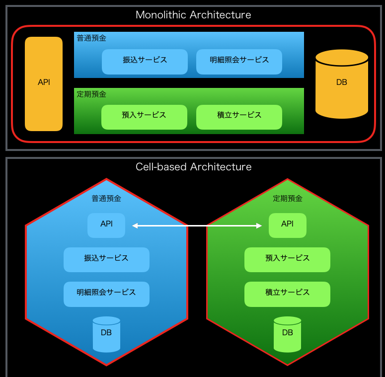

re:Cap for NTT Data 2019.12.18
自己紹介

- 名前：川畑 光平
- 所属：デジタル技術部アジャイルプロフェッショナルセンタ
- 今の仕事：プロジェクト支援(主にクラウド系)とR&D
- これまでの仕事
- 某金融機関IBアプリケーション開発(投資信託業務)
- 某金融社団法人システム基盤開発
- TERASOLUNA/自動化ツール開発
- プロジェクト支援多数(AP基盤/アーキテクト)
- Technical background
- シニアITスペリャリスト(ソフトウェアアーキテクチャ)
- TERASOLUNA認定アーキテクト
- Pivotal certified Spring Professional
- Redhat certified engineers
- AWS Solution Architect Processional
- 2019 APN AWS Top Engineers & Ambassadors
- マイナビ「ITSearch+」で記事連載中
re:Invent My Schedule
Today’s Topic
Cell-based Architecture
Cell-based Architecture - Reducing blast radius(爆発半径：障害影響の範囲) -

出典：「Cell-Based Architecture」（Asanka Abeysinghe | Deputy CTO & VP of Architecture | Paul Fremantle | CTO and Co-Founder - CTO Office | WSO2, Inc）： wso2/reference-architecture
Cell-based Architecture - Beyond MicroService -
- セルは単一ないしは幾つかのマイクロサービスアプリケーション、サーバレスアプリケーション・データストアなどのコンポーネント(データプレーン)で構成される
- セルはメッセージキューやESB、REST APIなどのゲートウェイをもつ(コントロールプレーン)
- セルにはレガシーシステムなど巨大なコンポーネントの集まりも指す場合もある
- セルはアジャイル開発を行うチームが、CI/CD等によって自動化された開発プロセス、デプロイ、リリースサイクルを最適化される単位である
- セルはDomainDrivenDevelopmentで言えば、「境界づけられたコンテキスト」の単位で相互に独立しており、スケーラビリティを有する
Cell-based Architecture をインターネットバンキングの例で考えてみよう

Cell-based Architectureをインターネットバンキングの例で考えてみよう

| Pros | Cons |
|---|---|
| アベイラビリティ(耐障害性) | データ一貫性の低下 |
| 柔軟なスケーラビリティ | 複雑性 |
| 開発のアジリティ |
Cell-based Architecture Session
障害の影響範囲の極小化に向け、AWSでCell-based Architectureを如何に実現するか
Cell-based Architecture Session

Conclusion
Cell-based Architectureは当社の抱える、ラージスケールなアプリケーションアーキテクチャやレガシーデジタルインテグレーションの課題解決に向けた1つの指針となる
Session : Best practice Lambda for Java
Conclusion : Best practice Lambda for Java
Ambassadors Meetup
What is Ambassador?Impressive New Service
Amazon CodeGuru Reviewer

Amazon CodeGuru Profiler

Conclusion
当社が好きそう